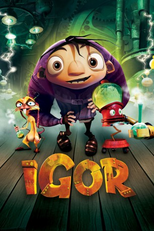
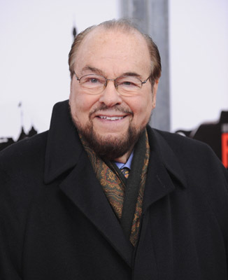

#10680 Igor
 
 IMDB-Wertung: 6.0 / 10
IMDB-Wertung: 6.0 / 10  Tomatometer: 37
Tomatometer: 37  Metascore: 40
Metascore: 40 
Irgendwo in der Welt existiert ein Ort, der voll ist mit verrückten Wissenschaftlern und ihren geisteskranken und psychopathischen Erfindungen. Jeder Wissenschaftler hat dabei seinen eigenen IGOR, eine kleine, bucklige Kreatur, die ihr Leben nur einem Zweck widmet: ihrem Herrn und Meister zu dienen. Doch ein IGOR stellt sich dagegen. Er hat den Traum, den größten Wettbewerb, den "Wissenschaftspreis des Bösen" zu gewinnen. Damit steht er allerdings nicht alleine da...
Jahr: 2008
Dauer: 86 Minuten
FSK: 6
Land: USA Studio: MGMTonspuren: DTS - ,
Untertitel: Deutsch,
Auflösung: 1080p (1920x1080) Größe: 5775 MB
Genre: Komödie, Fantasy, Animation/Trick, Familie
Regisseur: Tony Leondis
Drehbuch: Chris McKenna, Tony Leondis, John Hoffman, Dimitri Toscas
Soundtrack: Patrick Doyle
Darsteller:
 John Cusack als Igor
John Cusack als Igor- Myleene Klass als Dr. Holzwurm
 John Cleese als Dr. Glickenstein
John Cleese als Dr. Glickenstein Steve Buscemi als Scamper
Steve Buscemi als Scamper Sean Hayes als Brain
Sean Hayes als Brain Jess Harnell als Announcer / Royal Guard #2
Jess Harnell als Announcer / Royal Guard #2 Eddie Izzard als Dr. Schadenfreude
Eddie Izzard als Dr. Schadenfreude Jennifer Coolidge als Jaclyn / Heidi
Jennifer Coolidge als Jaclyn / Heidi Jay Leno als King Malbert
Jay Leno als King Malbert Molly Shannon als Eva
Molly Shannon als Eva- Paul Vogt als Buzz Offmann
-  James Lipton als Himself
 Christian Slater als Dr. Schadenfreude's Igor
Christian Slater als Dr. Schadenfreude's Igor- Arsenio Hall als Carl Cristall
- Max Howard als Killiseum Fan #3
- Chris McKenna als Killiseum Fan #5
 Christopher Maleki als Killiseum Fan #6 (uncredited)
Christopher Maleki als Killiseum Fan #6 (uncredited) Frank Welker als Animals' vocal effects (uncredited)
Frank Welker als Animals' vocal effects (uncredited)- Robin Howard als Dr. Holzwurm's Igor
- Matt McKenna als Dr. Herzschlag
- Zoë Bright als Blind Woman / Killiseum Fan #1
- Sophia Eraklis als Blind Orphan #1
- A. Cheron Hall als Blind Orphan #2 / Blind Orphan #4
- Alexander Leondis als Blind Orphan #3
- Juliana Leondis als Blind Orphan #5
- Michael Leondis als Blind Orphan #6
- Nicole Leondis als Blind Orphan #7
- Robin Tisserand als Blind Orphan #8
- Kay Cole als Grand Dame
- Tayah Howard als Tatiana
- Justin Eick als Royal Guard #1
- John D. Eraklis als Killiseum Fan #2
- Tony Leondis als Killiseum Fan #4
Datei: X:\Kinder Filme (G-M)\Igor (2008, FSK6, 1920x1080).mkv seit 21.02.2019
Festplatte: Kinder-Filme+Trick
 Es gibt insgesamt 84 Filme in der Gruppe 'Kinder Filme (G-M)'
Es gibt insgesamt 84 Filme in der Gruppe 'Kinder Filme (G-M)'